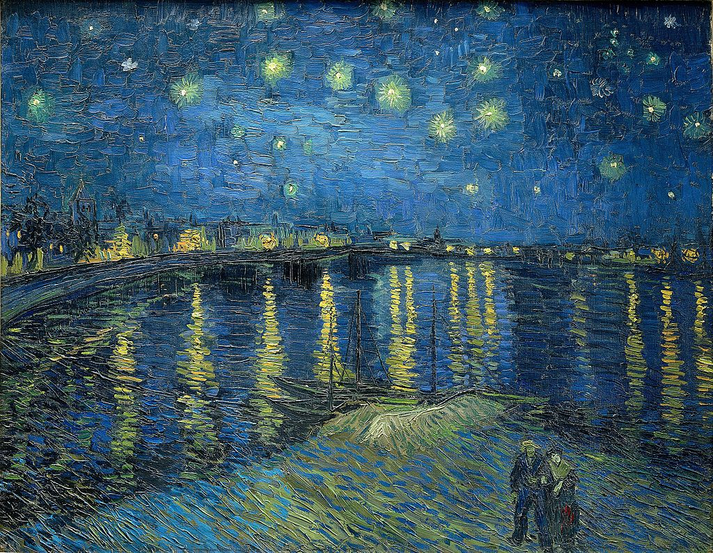

<head>
<meta charset="UTF-8" />
<meta name="keywords" content="drawing, painting" />
<meta name="description" content="drawings by Sunjy" />
<title>Sunjy</title>
<link rel="shortcut icon" type="image/x-icon" href="../../mImages/mCommon/favicon.ico" media="screen" />
<link rel="stylesheet" type="text/css" href="../../mCsses/mCommon/mCssA.css" />
<link rel="stylesheet" type="text/css" href="../../mCsses/mCommon/mCssB.css" />
<link rel="stylesheet" type="text/css" href="../../mCsses/mCommon/mCssC.css" />
<link rel="stylesheet" type="text/css" href="../../mCsses/mCommon/mCssD.css" />
<link rel="stylesheet" type="text/css" href="../../mCsses/mContent/mCssA.css" />
<link rel="stylesheet" type="text/css" href="../../mCsses/mContent/mCssB.css" />
<link rel="stylesheet" type="text/css" href="../../mCsses/mContent/mCssC.css" />
<link rel="stylesheet" type="text/css" href="../../mCsses/mContent/mCssD.css" />
</head>
<script type="text/javascript" src="../../mScripts/mContent/mContentAA.js" /></script>
<script type="text/javascript" src="../../mScripts/mContent/mContentAB.js" /></script>
<script type="text/javascript" src="../../mScripts/mContent/mContentAC.js" /></script>
<script type="text/javascript" src="../../mScripts/mContent/mContentAD.js" /></script>
<script type="text/javascript"></script> 
<script type="text/javascript">
document.write('<div class="mImgAbsolute"></div>');
/*
document.write('<p class="mFontSizeBColor" />From a white paper...</p>');
document.write('<table class="center"><tr><td>');
document.write('');
document.write('</td></tr></table>');
*/
</script>


<script type="text/javascript">
document.write('<p class="mFontSizeBColor" />Starry Night Over the Rhône</p>');
document.write('<p class="mFontSizeSColor" />By Vincent van Gogh. “Starry Night Over the Rhône” is one of Vincent van Gogh’s most famous paintings.  The painting of Arles at night time was painted from the quay on the east side of the Rhône River. <br><br>This spot was only a two-minute walk from the Yellow House, which Van Gogh was renting at the time.<br><br>Van Gogh described this painting in a letter to his brother Theo:<br><br>“….  in short the starry sky painted by night, actually under a gas jet.<br> The sky is aquamarine, and the water is royal blue, the ground is mauve.<br> The town is blue and purple. The gas is yellow, and the reflections are russet gold descending to green-bronze.<br> On the aquamarine field of the sky, the Great Bear is a sparkling green and pink,<br> whose discreet paleness contrasts with the brutal gold of the gas.”<br><br>The blue colors dominate, and the city gas lights glimmer with an intense orange that is reflected in the water, and the stars sparkle like gemstones.</p>');
document.write('<table class="center" /><tr><td>');
document.write('<br>This spot was only a two-minute walk from the Yellow House, which Van Gogh was renting at the time.<br><br>Van Gogh described this painting in a letter to his brother Theo:<br><br>“….  in short the starry sky painted by night, actually under a gas jet.<br> The sky is aquamarine, and the water is royal blue, the ground is mauve.<br> The town is blue and purple. The gas is yellow, and the reflections are russet gold descending to green-bronze.<br> On the aquamarine field of the sky, the Great Bear is a sparkling green and pink,<br> whose discreet paleness contrasts with the brutal gold of the gas.”<br><br>The blue colors dominate, and the city gas lights glimmer with an intense orange that is reflected in the water, and the stars sparkle like gemstones." />');
document.write('</td></tr></table>');
</script>


